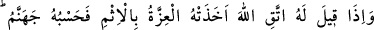
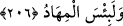

yapmak için sa’y u gayret gösterir. Sa’yetmek demek, âdetâ koşmak ve işi ciddî tutmak
demektir. Koşma işinin yeryüzünde olacağı âşikâr iken, âyet-i kerîmede “yeryüzünde”
diye zikredilmesi, o kişinin fesâdının umûmî oluşunu ve bozgunculuğunu âdetâ
yeryüzünün her cüz’üne yaymak gibi bir niyetini göstermek içindir. Bozgunculukla da
yetinmez, onun zararı daha da ileri olur ve ekili dikili ne varsa, nebâtât nevinden her
şeyi; insan olsun hayvan olsun, her türlü canlının neslini ortadan kaldırmaya çalışır.
Nitekim Ahnes, Sakîf kabîlesine böyle bir cürümde bulunmuştur. Geceleyin bu kabîleye
varıp, hayvanlarını ve ekili-dikili sebzelerini, aralarında var olan bir düşmanlık
sebebiyle yok etmiştir.
Kötü idâreciler de, haksız yere cana kıymak ve milletinin malını boş yere telef
etmekle aynı kötülüğü yaparlar. Ya da adâleti bırakıp zulme meyledeler de Allah
onların bu kötülükleri sebebiyle yağmuru keser. Neticede bitkiler ve nesiller
susuzluktan telef olur. Hadis-i şerifte buyurulmuştur ki: “Hak Teâlâ, mâişet sebeblerini
yarattığı zaman bereketi nebâtâta ve canlıların nesillerine koymuştur.”[132]
Dolayısıyla bu iki şeyin helâkı demek, fesâdda zirveye ulaşmak demektir.
Yine hadiste buyurulmuştur ki: “Kıyâmet günü idâreci bir kimse getirilir ve
cehennem köprüsü üzerine atılır. Bunun üzerine köprü, şiddetli bir şekilde sallanır ve
o kişinin bütün mafsalları yerinden oynar. Şayet amelleriyle Allah’a itaat eden
birisiyse, köprüden geçip kurtulur. Yok âsî olmuşsa, köprü yarılır ve o kişi
cehennemin elli yıllık derinliğine düşüp yuvarlanır.”[133]
Allah fesâdı hiç sevmez. Bozgunculuğa asla rızâsı yoktur. Fesadçılar O’nun buğz ve
gazabını hak ederler.
“Allah Teâlâ bizzat kendisi, varlıkta olan şeyleri yıkıp bozduğu halde nasıl olur da
fesâdı sevmez, diyenler çıkabilir?” şeklinde bir soru akla gelirse, buna şu şekilde bir
cevap verilebilir: Hakîkatte ifsâd, bir şeyi sû-i niyetle iyi hâlinden çıkarmaktır. Böyle
bir şey Hak Teâlâ’nın yapıp ettiklerinde mevcûd olamaz. O, böyle bir şeyin yapılmasını
emretmediği gibi, yapana da muhabbet etmez. O’nun fiillerinde öyle bir şey görülmez.
Zâhiren bizim fesâd gibi gördüğümüz şeyler, bize göre öyledir. Biz onu öyle kabûl
ettiğimiz içindir. Hak Teâlâ nazarında ise bütün bunların hepsi ifsâd değil ıslahtır,
düzene koymadır.
206. Böylesine “Allah’dan kork!” denilince benlik ve gurûr kendisini günaha
sevkeder. (Cezâ ve azâb olarak) ona cehennem yeter. O ne kötü yerdir!
O münâfık bozguncu kimselere, nasîhat ve öğüt yollu: “Allah’dan kork da bu kötü
işleri yapma. Münâfıklığı ve fesadçılığı bırak” diye nasîhat edilecek olursa “İşlediği